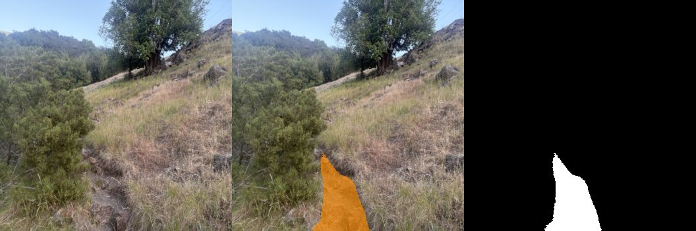
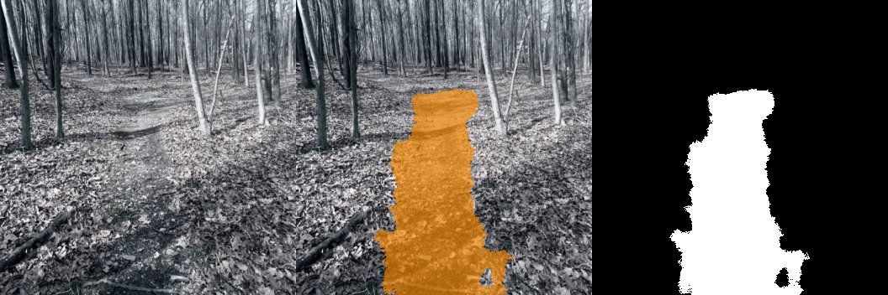
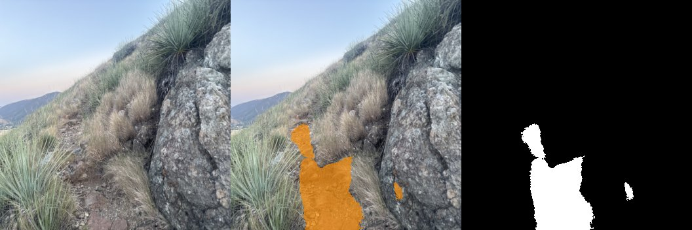

Mechanical engineering student with a focus on robotics and controls. I enjoy working on most aspects of robotics projects, including mechanical design/analysis and writing software. Started building robots in my basement before college, which is where I picked up ROS. Currently working in ROS2, Python, and SolidWorks.



A segmentation system for identifying trails in natural environments, built with my own dataset of 450+ images. The architecture uses a lightweight classifier to select between specialized segmentation models trained on different trail types, currently two models covering forest and dirt trails, with more planned. This better handles variation across different environments and allows for lighter-weight models.
Intended for deployment on a Raspberry Pi 5 with an accelerator shield, interfacing with a PX4 flight controller for autonomous trail navigation, currently only a design goal due to cost. A Discord bot is set up for running quick segmentation tests from my phone camera.
A 5-DOF robotic arm built on the open-source Kadua arm design, driven by stepper motors with planetary gearboxes and controlled via a Raspberry Pi and Arduino. V2 is functional, with motors slipping under torque. V3 is in the works and involves a mechanical redesign of the gearboxes to address these issues.
The ROS2 control system runs on a laptop and handles remote control via RViz. A target pose is created via clicking on a 3D interface, inverse kinematics are solved, and the resulting joint commands are sent over a socket to the Pi, which converts them to motor steps. Future work includes a camera mounted on the rotating wrist section, providing a direct view of the claw for autonomous grasping.
A low-cost, mostly 3D printed linear actuator designed to be rail-mounted and produced in quantity. Started working on this out of a need for a large number of actuators for another project, cost minimization, and ease of manufacturing were the primary design goals. Built around a NEMA 17 stepper motor for prototyping, with a planned switch to a DC servo motor for higher torque at speed.
A 3D-printed 5-bar linkage driven by two stepper motors and controlled by a Raspberry Pi, which converts photographs into physical pen drawings. Each arm is around 20cm, mounted to a board with the pen held in a printed clamp at the end effector. The software pipeline applies Canny edge detection, sorts contours by area, converts them to splines, then solves the IK analytically — with a position checker to reject configurations outside the reachable workspace. A MATLAB script mapping the full reachable workspace was written as a development tool.
The software is complete and functional, successfully drawing simple shapes and basic contour outlines. Drawing quality is limited by mechanical slop in the current design. Project is now closed.
A two-wheeled robot on a 3D printed and metal chassis, driven by DC motors and a Raspberry Pi with a Pi camera. Tracks objects by color and shape in real time using an adaptive color mask and contour approximation — no neural networks, designed for soccer ball-sized targets. The Pi broadcasts a hotspot for direct laptop control. Project closed.
MATE ROV (Software Lead) — Leading the topside software for an underwater ROV built for the MATE competition. The control system runs on a topside Jetson Nano, communicating with the embedded board on the ROV via USB. ROS2 Humble manages a network of nodes handling thruster vectoring, controls, PID, and computer vision. A Gazebo simulation has been the primary testing environment ahead of first water trials.
Lower Limb Exoskeleton Assist Project — Contributing to the mechanical design of cycloidal drive systems and surrounding joint assemblies, iterating through 3D printed prototypes and helping manufacture custom steel and aluminium components in a machine shop.
Poly1Rover Mars Rover Project — Designing and iterating mechanical hardware with a focus on rapid prototyping and manufacturability.